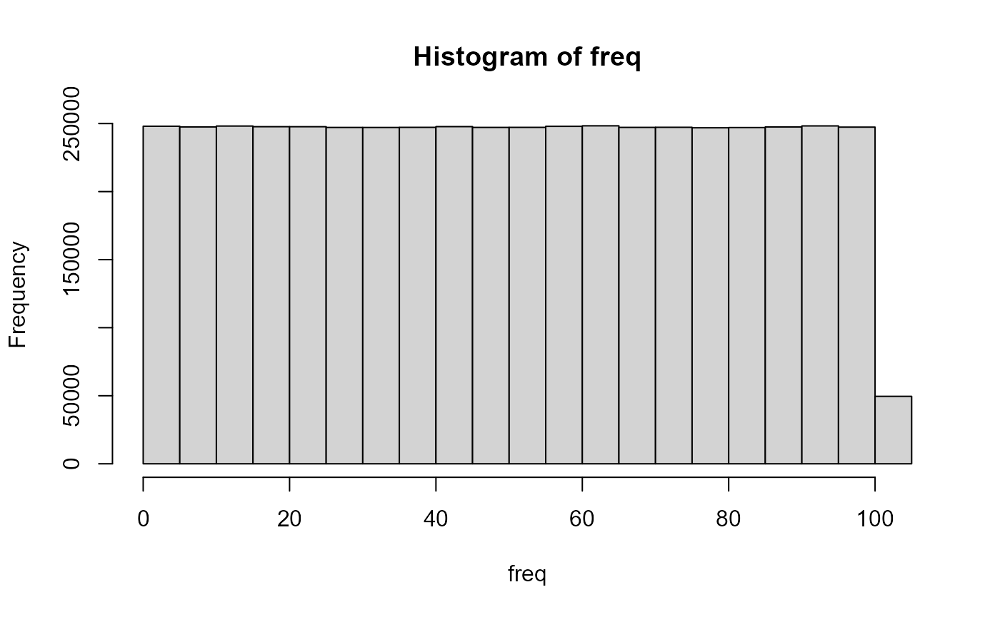

R_Basics_Practicals.Rmd
library(dplyr)
#> Warning: package 'dplyr' was built under R version 4.1.3
#>
#> Attaching package: 'dplyr'
#> The following objects are masked from 'package:stats':
#>
#> filter, lag
#> The following objects are masked from 'package:base':
#>
#> intersect, setdiff, setequal, union
vector_example <- c(4, 1, 9, 4, 2, 8, 7, 3)
mean(vector_example)
#> [1] 4.75
data_frame_example <- data.frame(colors = c("blue", "blue", "red", "red", "yellow", "yellow", "purple", "purple", "green", "green"),
congruency = c("congruent", "incongruent", "congruent", "incongruent", "congruent", "incongruent","congruent", "incongruent", "congruent", "incongruent"),
data = c(35, 49, 21, 92, 54, 17, 38, 43, 20, 31))
data_frame_example
#> colors congruency data
#> 1 blue congruent 35
#> 2 blue incongruent 49
#> 3 red congruent 21
#> 4 red incongruent 92
#> 5 yellow congruent 54
#> 6 yellow incongruent 17
#> 7 purple congruent 38
#> 8 purple incongruent 43
#> 9 green congruent 20
#> 10 green incongruent 31
average_congruent <- mean(data_frame_example$data[data_frame_example$congruency == "congruent"])
average_congruent
#> [1] 33.6
bnj <- list("phishfood", 7, 4, "med")
names(bnj) <- c("flavor", "tastyrating", "creamyrating", "pricing")
hagendaaz <- list("vanilla", 6, 9, "high")
names(hagendaaz) <- c("flavor", "tastyrating", "creamyrating", "pricing")
breyers <- list("brownie", 9, 3, "low")
names(breyers) <- c("flavor", "tastyrating", "creamyrating", "pricing")
icecreamreviews <- list(bnj, hagendaaz, breyers)
### To conveniently vectorize tastyness ratings across two brands (the utility of lists is intended to be demonstrated here under a context of putting in all the review details of each ice cream brand separately)
hd_breyers_tasty_compare <- c(icecreamreviews[[2]]$tastyrating, icecreamreviews[[3]]$tastyrating)
hd_breyers_tasty_compare
#> [1] 6 9
for(i in 0:20){
pretend_F_ratio <- (rnorm(1, 0, 0.5)+1) / ((rnorm(1, 0, 0.5)^2) + i)
print(pretend_F_ratio)
}
#> [1] 49.85259
#> [1] 0.7856388
#> [1] 0.2417116
#> [1] 0.4967816
#> [1] 0.2476962
#> [1] 0.296048
#> [1] 0.1765689
#> [1] 0.2175974
#> [1] -0.0457061
#> [1] 0.1047227
#> [1] 0.07236501
#> [1] -0.02669555
#> [1] 0.1605851
#> [1] 0.0270336
#> [1] 0.1097069
#> [1] 0.08887287
#> [1] 0.09202356
#> [1] 0.05852521
#> [1] 0.02263418
#> [1] -0.002345666
#> [1] 0.009402238
rand_data <- 5
i <- 1
while(i <= 100){
pretend_F_ratio <- (rand_data) / (rand_data+i)
if((pretend_F_ratio) < 0.3){
break
}
print(pretend_F_ratio)
i <- i+1
}
#> [1] 0.8333333
#> [1] 0.7142857
#> [1] 0.625
#> [1] 0.5555556
#> [1] 0.5
#> [1] 0.4545455
#> [1] 0.4166667
#> [1] 0.3846154
#> [1] 0.3571429
#> [1] 0.3333333
#> [1] 0.3125
example_vector <- c(rnorm(20, 0, 1))
negative_values <- example_vector[example_vector < 0]
positive_values <- example_vector[example_vector > 0]
negative_values
#> [1] -0.9063616 -1.9011601 -1.5047464 -1.0624819 -1.1472860 -0.3119094
#> [7] -0.2778286 -0.9144537 -0.4889889 -0.9278772 -0.3475913
positive_values
#> [1] 0.009655557 0.650349291 0.728274877 1.402197477 1.227079758 0.015156063
#> [7] 1.438196392 0.695984302 0.346720961
data_frame_example <- data.frame(colors = c("blue", "blue", "red", "red", "yellow", "yellow", "purple", "purple", "green", "green"),
congruency = c("congruent", "incongruent", "congruent", "incongruent", "congruent", "incongruent","congruent", "incongruent", "congruent", "incongruent"),
data = c(35, 49, 21, 92, 54, 17, 38, 43, 20, 31))
incongruent_values <- c(data_frame_example$data[data_frame_example$congruency == "incongruent"])
incongruent_values
#> [1] 49 92 17 43 31
fizzy_buzzy <- vector()
for(i in 1:100){
if(i%%3 && i%%5 == 0){
fizzy_buzzy[i] <- "fizzbuzz"
} else if (i%%3 == 0){
fizzy_buzzy[i] <- "fizz"
} else if (i%%5 == 0){
fizzy_buzzy[i] <- "buzz"
} else {
fizzy_buzzy[i] <- i
}
}
print(fizzy_buzzy)
#> [1] "1" "2" "fizz" "4" "fizzbuzz" "fizz"
#> [7] "7" "8" "fizz" "fizzbuzz" "11" "fizz"
#> [13] "13" "14" "fizz" "16" "17" "fizz"
#> [19] "19" "fizzbuzz" "fizz" "22" "23" "fizz"
#> [25] "fizzbuzz" "26" "fizz" "28" "29" "fizz"
#> [31] "31" "32" "fizz" "34" "fizzbuzz" "fizz"
#> [37] "37" "38" "fizz" "fizzbuzz" "41" "fizz"
#> [43] "43" "44" "fizz" "46" "47" "fizz"
#> [49] "49" "fizzbuzz" "fizz" "52" "53" "fizz"
#> [55] "fizzbuzz" "56" "fizz" "58" "59" "fizz"
#> [61] "61" "62" "fizz" "64" "fizzbuzz" "fizz"
#> [67] "67" "68" "fizz" "fizzbuzz" "71" "fizz"
#> [73] "73" "74" "fizz" "76" "77" "fizz"
#> [79] "79" "fizzbuzz" "fizz" "82" "83" "fizz"
#> [85] "fizzbuzz" "86" "fizz" "88" "89" "fizz"
#> [91] "91" "92" "fizz" "94" "fizzbuzz" "fizz"
#> [97] "97" "98" "fizz" "fizzbuzz"
freq <- runif(5000000, 0, 101)
frequencies <- tabulate(freq)
frequency_table <- tibble(Values = 1:100,
Frequencies = frequencies)
frequency_table
#> # A tibble: 100 x 2
#> Values Frequencies
#> <int> <int>
#> 1 1 49297
#> 2 2 49569
#> 3 3 49766
#> 4 4 49719
#> 5 5 49147
#> 6 6 49155
#> 7 7 49493
#> 8 8 49413
#> 9 9 49486
#> 10 10 49318
#> # ... with 90 more rows
frequency_max <- frequency_table[frequency_table$Values == 100, ]
max_frequency <- as.numeric(frequency_max %>% select(Frequencies))
frequency_min <- frequency_table[frequency_table$Values == 1, ]
min_frequency <- as.numeric(frequency_min %>% select(Frequencies))
frequency_range <- (max_frequency - min_frequency)
frequency_range
#> [1] 255
mean(frequency_table$Frequencies)
#> [1] 49504.89
hist(freq)
library(immuno.analyze)
immuno.analyze::percent.area.plane("PS6_%Area_BLA_Ant", "Med", "Pos", "PS6_Area_Percent", "Ctrl", "Switch", 6, "percent_ps6_BLA.csv")
#> Warning: package 'ggplot2' was built under R version 4.1.3
#> Warning: package 'patchwork' was built under R version 4.1.3
#> [[1]]
#> [1] 0.91581978 0.01342576 0.71950616
#>
#> [[2]]
percent.area.plane <- function(graph_name_1, graph_name_2, graph_name_3, DV, first_group, second_group, n_per_group, data = x){
library(stringr)
library(dplyr)
library(tidyr)
library(ggplot2)
library(patchwork)
immunot_data <- as.data.frame(read.csv(data, header = TRUE, sep = ",", dec = ".")) %>%
select(c("Label", "Mean", "X.Area"))
immunot_data <- separate(immunot_data, "Label", c("Group", NA, "Subject", NA, "Plane", "Side", NA, NA, NA, NA, NA, NA), "_")
means_by_plane <- tibble(aggregate(immunot_data$X.Area, FUN = mean, by = list(Plane = immunot_data$Plane, Group = immunot_data$Group)))
sds_by_plane <- tibble(aggregate(immunot_data$X.Area, FUN = sd, by = list(Plane = immunot_data$Plane, Group = immunot_data$Group)))
gp1_ant <- immunot_data[immunot_data$Group == first_group & immunot_data$Plane == "Ant", ]
aa <- as.vector(t(gp1_ant %>% select(X.Area)))
gp2_ant <- immunot_data[immunot_data$Group == second_group & immunot_data$Plane == "Ant", ]
ab <- as.vector(t(gp2_ant %>% select(X.Area)))
gp1_med <- immunot_data[immunot_data$Group == first_group & immunot_data$Plane == "Med", ]
ba <- as.vector(t(gp1_med %>% select(X.Area)))
gp2_med <- immunot_data[immunot_data$Group == second_group & immunot_data$Plane == "Med", ]
bb <- as.vector(t(gp2_med %>% select(X.Area)))
gp1_pos <- immunot_data[immunot_data$Group == first_group & immunot_data$Plane == "Pos", ]
ca <- as.vector(t(gp1_pos %>% select(X.Area)))
gp2_pos <- immunot_data[immunot_data$Group == second_group & immunot_data$Plane == "Pos", ]
cb <- as.vector(t(gp2_pos %>% select(X.Area)))
gp1_mean_ant <- means_by_plane[1,3]
gp1_mean_med <- means_by_plane[2,3]
gp1_mean_pos <- means_by_plane[3,3]
gp2_mean_ant <- means_by_plane[4,3]
gp2_mean_med <- means_by_plane[5,3]
gp2_mean_pos <- means_by_plane[6,3]
gp1_sterr_ant <- sds_by_plane[1,3] / sqrt(n_per_group)
gp1_sterr_med <- sds_by_plane[2,3] / sqrt(n_per_group)
gp1_sterr_pos <- sds_by_plane[3,3] / sqrt(n_per_group)
gp2_sterr_ant <- sds_by_plane[4,3] / sqrt(n_per_group)
gp2_sterr_med <- sds_by_plane[5,3] / sqrt(n_per_group)
gp2_sterr_pos <- sds_by_plane[6,3] / sqrt(n_per_group)
ant_compare <- as.numeric(c(gp1_mean_ant, gp2_mean_ant))
med_compare <- as.numeric(c(gp1_mean_med, gp2_mean_med))
pos_compare <- as.numeric(c(gp1_mean_pos, gp2_mean_pos))
ant_sterrs <- as.numeric(c(gp1_sterr_ant, gp2_sterr_ant))
med_sterrs <- as.numeric(c(gp1_sterr_med, gp2_sterr_med))
pos_sterrs <- as.numeric(c(gp1_sterr_pos, gp2_sterr_pos))
graph_df_ant <- tibble(Ant = rep(c(first_group, second_group)),
DV = ant_compare)
graph_df_med <- tibble(Med = rep(c(first_group, second_group)),
DV = med_compare)
graph_df_pos <- tibble(Pos = rep(c(first_group, second_group)),
DV = pos_compare)
a <- ggplot(graph_df_ant, aes(x = Ant, y = DV)) +
geom_bar(stat = "identity") +
geom_errorbar(aes(ymin = (DV - ant_sterrs), ymax = (DV + ant_sterrs))) +
ggtitle(graph_name_1) +
ylab(DV)
m <- ggplot(graph_df_med, aes(x = Med, y = DV)) +
geom_bar(stat = "identity") +
geom_errorbar(aes(ymin = (DV - med_sterrs), ymax = (DV + med_sterrs))) +
ggtitle(graph_name_2) +
ylab(DV)
p <- ggplot(graph_df_pos, aes(x = Pos, y = DV)) +
geom_bar(stat = "identity") +
geom_errorbar(aes(ymin = (DV - pos_sterrs), ymax = (DV + pos_sterrs))) +
ggtitle(graph_name_3) +
ylab(DV)
ant_t <- t.test(aa, ab, var.equal = TRUE)$p.value
med_t <- t.test(ba, bb, var.equal = TRUE)$p.value
pos_t <- t.test(ca, cb, var.equal = TRUE)$p.value
analysis_list <- c(ant_t, med_t, pos_t)
plot <- a+m+p
analysis <- return(list(analysis_list, plot))
}
library(DBSStats2SemesterProject)
#>
#> Attaching package: 'DBSStats2SemesterProject'
#> The following object is masked _by_ '.GlobalEnv':
#>
#> percent.area.plane
#> The following objects are masked from 'package:immuno.analyze':
#>
#> cell.counts.plane, hello, intensity.plane, overall.cell.counts,
#> overall.intensity, overall.percent.area, percent.area.plane